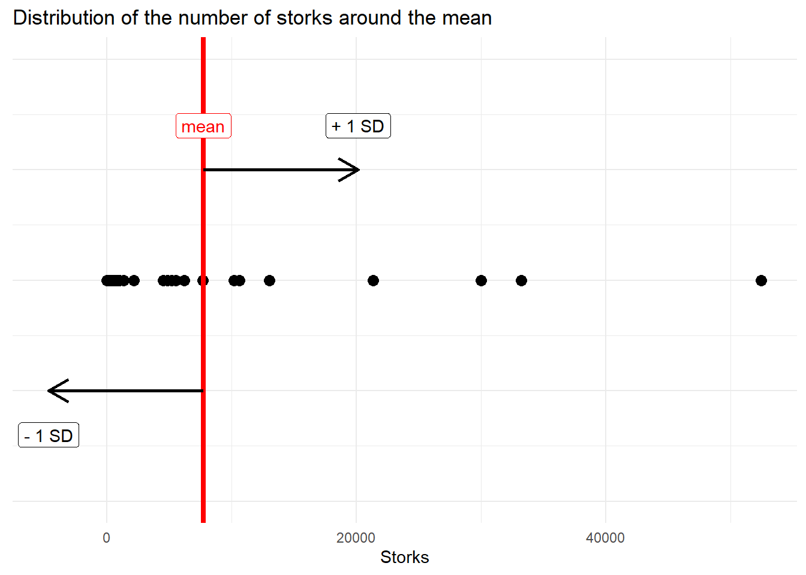
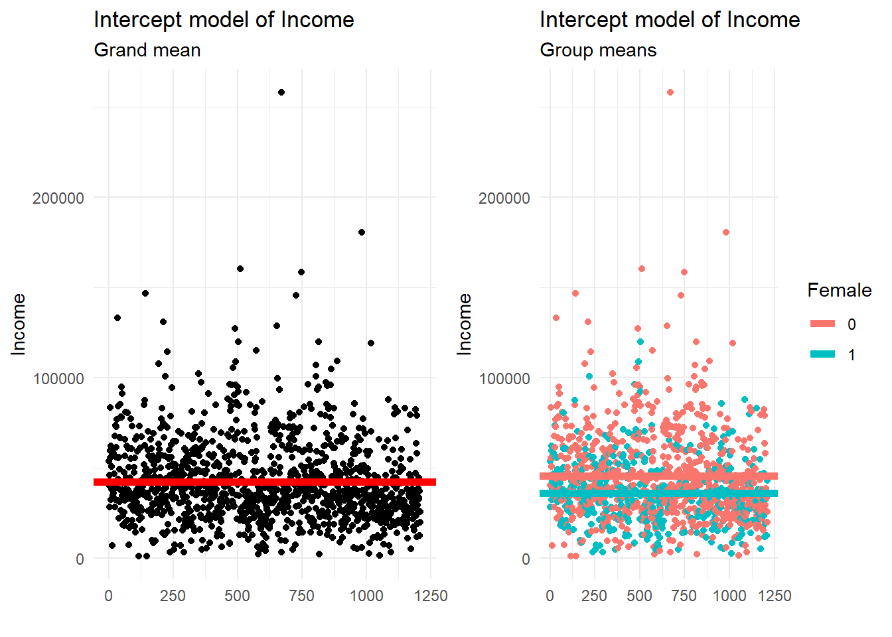
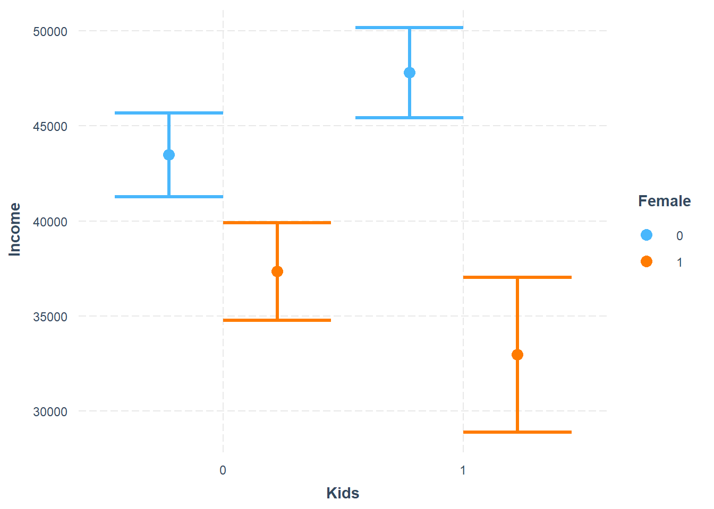
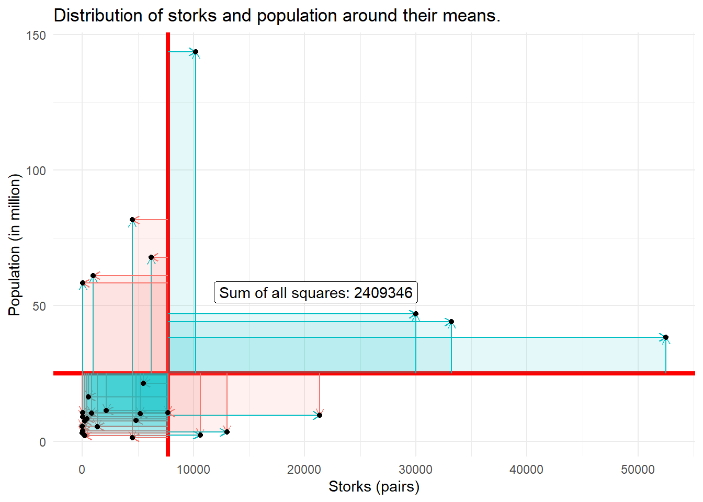
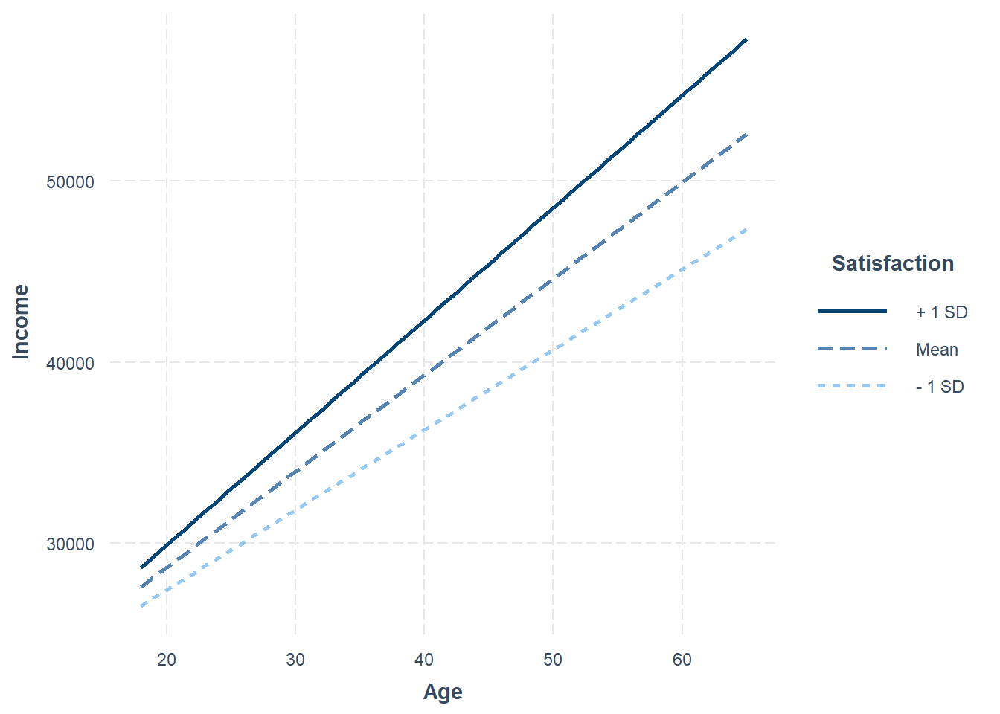
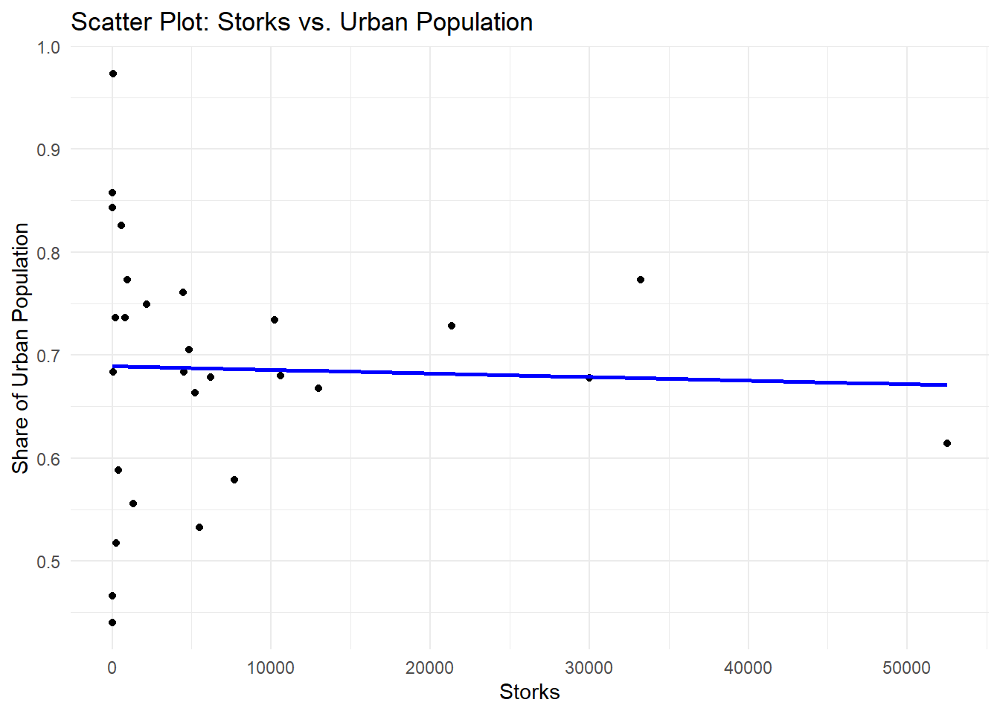
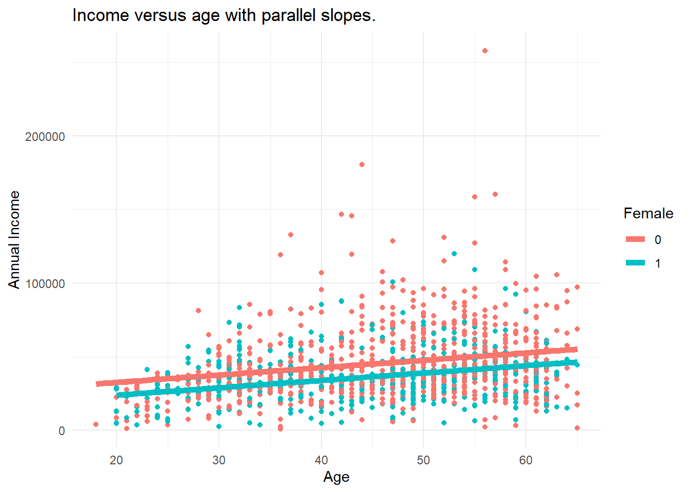

Chapter 9 Relationships
“[M]y ally is the Force, and a powerful ally it is. Life creates it, makes it grow. Its energy surrounds us, binds us. Luminous beings are we, not this crude matter. You must feel the Force flow around you. Here, between you, me, the tree, the rock, yes, even between the land and the ship.”
"I'm not talking about pagan voodoo here - I'm talking about something REAL and measurable in the biology of the forest. What we think we know is that there's some kind of electrochemical communication between the roots of the trees, like the synapses between neurons. Each tree has ten to the fourth connections to the trees around it, and there are ten to the twelfth trees on Pandora. That's more connections than the human brain. It's a network - a global network. The Na'vi can access it, they can upload and download data - memories - at sites like the one you just destroyed."
Welcome to a chapter where we explore the connections that make our social world tick. Think about how Yoda talks about the Force binding everything in the Star Wars galaxy and how Dr. Grace Augustine explains the real, measurable connections in Pandora's forest. Well, social scientists do something similar in our world – we study the relationships that shape our lives.
A relationship is the way in which two or more concepts are connected. Consider these examples: Can money truly bring happiness (Easterlin 1973)? Intriguing examples abound, such as exploring the relationship between social media use and sleep quality (Alonzo et al. 2021), investigating the impact of attachment styles on adult romantic relationships (Feeney and Noller 1990), and studying the interplay between gender diversity and team performance (Schneid et al. 2015). Additionally, researchers investigate the connection between parental involvement and academic achievement (Wilder 2014), and scrutinize how perceived crime levels influence quality of life (Kitchen and Williams 2010). The study conducted by Heim and Heim (2023) further delves into the secrets behind enduring relationships, with younger couples seeking insights on factors like commitment, altruism, shared values, good communication, compromise, love, and persistence from older couples with over 40 years of marriage experience (Heim and Heim 2023).
In our example, we explore the stork-baby relationship by measuring the number of stork pairs and human population as continuous variables. Using a scatter plot, we depict their connection as dots on a graph. We also try another way by changing one of the continuous things into groups, like putting them in boxes. We then use a barplot to show this connection. This helps us see both the detailed view of the continuous things and the simpler picture when we group them. It gives readers a good understanding of how things are related in different ways.
9.1 Storks Deliver Babies

Figure 9.1: Stork bringing baby - Colmar, Alsace.
The relationship between the number of storks and the human population is a classic example used to illustrate the concept that correlation does not imply causation (Matthews 2000). It is based on the familiar folk tale that babies are delivered by storks. People noticed a positive correlation between the number of storks in an area or country and the number of human babies born. Stork populations and human populations seem to increase or decrease together.
Although storks are not responsible for delivering babies, a careless interpretation of correlation and p-values can lead to unreliable conclusions.
International White Stork Census
The first International White Stork Census was initiated by Prof. Ernst Schüz in 1934 and thus has a long history. Since 1974, it has taken place at ten-yearly intervals. So far, it has been possible to enthuse countless ornithologists and people interested in protecting White Storks to record their numbers at regular intervals.
Ressource: Results of the 6th International White Stork Census 2004/2005
We have data on stork and human population for 28 countries in 2005.
Storks is the number of pairs of storks in that country. The Area is in square kilometers. Population is the total population in million whereas UrbanPop is the population living in urban areas. Fertility refers to the total fertility rate, that is the average number of children that would be born to a female over their lifetime.
The key characteristics of the data are:
| NUnique | Min | Mean | Max | SD | Histogram | |
|---|---|---|---|---|---|---|
| Storks | 26 | 3.00 | 7718.36 | 52500.00 | 12413.07 | ▇▂▁ |
| Area | 28 | 20273.00 | 801740.96 | 17075200.00 | 3196023.02 | ▇ |
| Population | 28 | 1.36 | 25.03 | 143.67 | 32.69 | ▇▁▁▁▁ |
| Fertility | 23 | 1.15 | 1.44 | 2.37 | 0.28 | ▄▇▁▂▁▁▁ |
| UrbanPop | 28 | 0.93 | 17.88 | 105.51 | 24.00 | ▇▁▁▁▁ |

Figure 9.2: The first known pair in Finland (2015), representing a northward expansion compared to the species' historical breeding range.
9.2 Statistics
Before venturing into specific inquiries, it is essential to establish a solid foundation by introducing key concepts such as variance, covariance, correlation, and levels of measurement. The understanding of variance is paramount as it provides valuable insights into the degree of variability within a variable. Covariance, the measure of how two variables change together, assumes a pivotal role in unveiling the direction of association between them. The standardized measure of association, correlation, plays a central role in quantifying the strength and direction of relationships.
9.2.1 Variance
The map shows the number of stork pairs for the selected countries.

The range goes from 3 pairs in Albania to 52500 pairs of storks in Poland. There is high variability in the number of storks. The variance is a measure for variability of data.
Definition
The variance is defined as the average quadratic deviation from the mean.
\[var(x) = \frac{1}{n-1} \sum (x_i - \overline{x} )^2\]
To calculate the variance, we subtract each data point \(x_i\) from the mean \(\overline{x}\). Then square those deviations and add them up. Finally, there is a scaling factor, we divide by the inverse number of observations minus 1.
The variance of Storks and can be calculated via var() in R. It is 154084389. 150 million of what? The variance is in squared unit, i.e. square storks and thus hard to interpret.
Truly Dedicated
When you collect data from every member of the population that you’re interested in, you can get an exact value for population variance. When you collect data from a sample, the sample variance is used to make estimates or inferences about the population variance. Sample variance is divided by \(n-1\). Population variance is divided by \(n\).
9.2.2 Standard Deviation
The standard deviation is derived from variance and tells, on average, how far each value lies from the mean. Variance and standard deviation both measure the variability of a variable. The standard deviation is the square root of variance.
\[sd(x) = \sqrt{var(x)} = \sqrt{ \frac{\sum (x_i - \overline{x} )^2}{n-1} } \]
In R, the standard deviation is calculated by sd() like sd(storks$Storks) which yields 12413. The mean of storks mean(storks$Storks) is approximately 7718. The one-dimensional variable Storks is visualized as points on the line.

Truly Dedicated
In statistics, the empirical rule states that
- 68% of the observed data will occur within the first standard deviation,
- 95% will take place in the second deviation and
- 99.7% within the third standard deviation
of the mean within a normal distribution. See 68–95–99.7 rule
The following scatterplot shows the number of storks and the population with their respective means as bold red lines.

Now, that we know how to describe the variation of each of the two variables, we look for a measure that reflects the co-variation of both variables, i.e. how they change in relation to each other. The new grid of means is a good starting point. When most data points fall into lower left and upper right quadrant, we call this a positive relationship.
9.2.3 Covariance
Covariance is a measure of the joint variability of two variables. The main idea of covariance is to classify three types of relationships: positive, negative or no relationship.
Definition
The covariance between two variables is the product of the deviations of x and y from their respective means.
\[cov(x,y) = \frac{1}{n-1} \sum\limits (x_i - \bar{x})(y_i - \bar{y})\]
For each data point, we multiply the differences with the respective mean. Geometrically, this results in several rectangular areas starting at the intersection of means as a new origin. The covariance sums up all these areas. Finally, the covariance is adjusted by the number of observations. When both values are smaller or greater than the mean, the result will be positive.
In R, the covariance is calculated by cov(storks$Storks, storks$Population) and yields 89235. The positive covariance confirms what we saw in the first scatterplot, the positive association between storks and population. Let's try to visualize the calculation procedure of the covariance.

Your Turn
Can you validate the covariance result from cov(x,y) from the sum of squares from the figure?
Covariance qualifies a relationship as positive or negative, i.e. the direction of the relationship. Covariance is expressed in units that vary with the data. Because the data are not standardized, you cannot use the covariance statistic to assess the strength of a linear relationship (a covariance of 117.5 can be very low for one relationship and 0.23 very high for another relationship).
We need a measure independent of units in a fixed range, the correlation coefficient.
9.2.4 Correlation
To assess the strength of a relationship between two variables a correlation coefficient is commonly used. It brings variation to a standardized scale between -1 to +1.
Definition
The correlation coefficient is a statistical measure of the strength and direction of the relationship between two variables.
\[r(x,y) = \frac{\sum\limits (x_i - \bar{x})(y_i - \bar{y})}{\sqrt{\sum\limits (x_i - \bar{x})^2 \sum\limits (y_i - \bar{y})^2}}\]
Does the numerator and denominator remind you of something? The formula is made of the components variance and covariance. Thus, the correlation coefficient formula is often expressed in short as:
\[r(x,y,) = \frac{Cov(x,y)}{\sqrt{Var(x) Var(y)}}\]
cor() is a basic function to calculate the correlation coefficient.
## [1] 0.2199176The correlation coefficients confirms ones more, there is a positive relationship. You will find thresholds for different fields of research that classify the magnitude of the correlation coefficient as weak, moderate and strong. Social science usually accept lower correlation values to be meaningful. One possible classification could be:
- above 0.4 is strong
- between 0.2 and 0.4 is moderate,
- and those below 0.2 are considered weak.
Thus we may consider the stork-population-relationship as weak to moderate. Keep in mind that these thresholds are not set in stone. Now, let's turn to cor.test(), a more sophisticated version including a hypothesis test.
##
## Pearson's product-moment correlation
##
## data: x and y
## t = 1.1495, df = 26, p-value = 0.2608
## alternative hypothesis: true correlation is not equal to 0
## 95 percent confidence interval:
## -0.1668487 0.5480307
## sample estimates:
## cor
## 0.2199176The correlation test is based on a t-value (t = 1.1495056) and returns a p-value (0.2608121) for statistical significance.
Definition
The p value is a statistical measure to determine whether the results of a statistical analysis are statistically significant or if they could have occurred due to random chance.
Small p-values below 0.05 are usually considered to be statistically significant. This is not the case for our stork-population relationship.
9.2.5 An Early Glimpse into Regression
Now, let's consolidate our understanding with a minimal example. Consider 5 observations for two variables, \(x = (4, 13, 19, 25, 29)\) and \(y = (10, 12, 28, 32, 38)\). To compute the variance for each variable, we follow a simple process: subtract the mean, square the difference, and sum the results. The mean of \(x\) is while the mean of \(y\) is .
\[ \begin{aligned} \text{var}(x) &= \frac{1}{4} ( (4 - 18)^2 + (13 - 18)^2 + (19 - 18)^2 + (25 - 18)^2 + (29 - 18)^2) \\ \text{var}(x) &= \frac{1}{4} ( (-14)^2 + (-5)^2 + (1)^2 + (7)^2 + (11)^2) \\ \text{var}(x) &= \frac{1}{4} ( 196 + 25 + 1 + 49 + 121) = \frac{1}{4} (196 + 75 + 121) = \frac{1}{4} (392) \\ \text{var}(x) &= \frac{1}{4} (392) = 98 \end{aligned} \]
We then calculate the covariance of \(x\) and \(y\). Given the variances and the covariance, we can calculate the correlation coefficient of the two variables.
Now, there is another concept for measuring the connection between two variables: The regression coefficient. Don't worry, for the moment you just need to know that there is an interesting connection between the two.
\[\beta_{x \rightarrow y} = r_{x,y} \cdot \frac{\sigma_y}{\sigma_x} \]
The correlation coefficient is the same value no matter the order of the variables. It is symmetric, i.e. the correlation between variables \(x\) and \(y\) is the same as the correlation between \(y\) and \(x\). However, the regression coefficient is a bit picky. It does care about the order of things. If you swap the roles of the dependent (\(y\)) and independent variables (\(x\)), the regression coefficient changes. So, it's like having a favorite direction – it matters which way you're looking when interpreting the relationship.
| Observation | x | y | \(\text{var}(x)\) | \(\text{var}(y)\) | \(\text{cov}(x, y)\) | \(r_{xy}\) | \(\beta_{x \rightarrow y}\) |
|---|---|---|---|---|---|---|---|
| 1 | 4 | 10 | 98 | 154 | 118 | 0.956 | 1.2 |
| 2 | 13 | 12 | 98 | 154 | 118 | 0.956 | 1.2 |
| 3 | 19 | 28 | 98 | 154 | 118 | 0.956 | 1.2 |
| 4 | 25 | 32 | 98 | 154 | 118 | 0.956 | 1.2 |
| 5 | 29 | 38 | 98 | 154 | 118 | 0.956 | 1.2 |
Notably, if the standard deviations (\(\sigma\)) of the two variables are equal, the correlation coefficient and the simple regression coefficient coincide. We can achieve this when variables are on the same scale. The most common way of achieving this is through standardization.
Standardization is a crucial process in statistics that harmonizes variables by centering them around a mean of 0 and scaling them to have a standard deviation of 1. This transformation ensures that variables operate on a uniform scale, facilitating meaningful comparisons. The standardization formula is expressed as:
\[ z = \frac{x - \bar{x}}{\sigma} \]
By subtracting each data point from the mean and dividing by the standard deviation, we create a standardized variable that simplifies the interpretation and comparison of different datasets. The same calculation based on scaled data:
| Observation | \(z_x\) | \(z_y\) | \(\text{var}(z_x)\) | \(\text{var}(z_y)\) | \(\text{cov}(z_x, z_y)\) | \(r_{z_x z_y}\) | \(\beta_{z_x \rightarrow z_y}\) |
|---|---|---|---|---|---|---|---|
| 1 | -1.414 | -1.128 | 1 | 1 | 0.956 | 0.956 | 0.956 |
| 2 | -0.505 | -0.967 | 1 | 1 | 0.956 | 0.956 | 0.956 |
| 3 | 0.101 | 0.322 | 1 | 1 | 0.956 | 0.956 | 0.956 |
| 4 | 0.707 | 0.645 | 1 | 1 | 0.956 | 0.956 | 0.956 |
| 5 | 1.111 | 1.128 | 1 | 1 | 0.956 | 0.956 | 0.956 |
9.3 Visualizations
9.3.1 Storks and Population in a Scatterplot
The scatterplot is a two-dimensional instrument that shows the number of storks on the x-axis and the population on the y-axis. The blue line illustrates the linear trend between the variables. Since its slope is increasing, it suggests a positive connection between storks and population, i.e. countries with more pairs of storks also tend to have a higher population.

The data doesn't cluster in a nice dot cloud but is spread out in both directions. While some countries only have a hand full of storks, others have tens of thousands. Let's explore this in more detail.
9.3.2 Storks and Population in a Barplot
A barplot is a graphical representation of categorical data where individual bars correspond to different categories, and the length of each bar represents the frequency or value associated with that category.
To illustrate the relationship in a barplot, the number of storks is transformed from a continuous variable to a categorical ordered variable. Stork numbers are grouped into four equal parts (quartiles). For each part, the mean number of population is calculated.

In the first quartile are countries with a range of stork numbers between 3 and 198. For all those countries the average population is about 14 million.
9.3.3 Storks and Area
we should also consider area when talking about the stork population relationship. since Additionally, considerations of geographical area size reveal potential confounding factors, where larger areas might exhibit both more storks and higher human populations.
Logarithmic transformations are particularly useful for variables that exhibit skewed distributions, large ranges, or multiplicative relationships. Examples include income, where logarithmic transformation can help normalize the data, making it more symmetric. Population growth rates are often better visualized on a log scale due to their multiplicative nature. Stock prices, influenced by exponential growth or decay, benefit from log scales to highlight percentage changes and identify trends.
This compression can be particularly useful when you have extreme values that would otherwise make the visualization challenging.
 ### Storks and Urban Population
Examining the stork-baby relationship in light of the share of urban population provides a more nuanced understanding of the observed correlation. The positive link between stork population and human population may be influenced by several factors.
Storks, as wild creatures, are significantly affected by shifts in habitat due to urbanization. This correlation analysis helps unravel the intricate dynamics of how changes in human habitat impact stork habitats.
Urbanization emerges as another influential factor, with urban areas typically hosting fewer storks but higher human populations, potentially confounding the relationship. Moreover, environmental changes, such as deforestation or urban development, may impact both stork habitats and human populations, introducing confounding variables that could mislead interpretations, making it appear as if storks influence human births. This comprehensive exploration highlights the complexity of the stork-baby relationship and the importance of considering multiple factors for a more accurate interpretation.
Integrating information on the share of urban population into the analysis of the stork-baby relationship offers a more nuanced perspective on the observed correlation. The positive link between stork population and the proportion of urban residents may stem from various contributing factors:
Storks, being wild creatures, can be significantly affected by shifts in habitat resulting from urbanization. Evaluating the correlation between the share of urban population and stork populations aids in understanding the impact of changes in human habitat on stork habitats.

9.4 Spurious Relationships
In the stork and baby relationship, the observed correlation between stork populations and birth rates could be influenced by common causes, such as geographical area and urbanization. Let's delve into these common causes:
Larger geographical areas might exhibit both more storks and higher human populations. This is not necessarily because storks directly influence birth rates, but rather because larger areas can accommodate larger stork populations and, simultaneously, support higher human populations.
Urban areas tend to have fewer storks but higher human populations. Urbanization can alter habitats and make urban areas less conducive to stork populations, while it concentrates human populations in the same regions.
Reading Skill and Shoe Size: - Variables: Reading skill and shoe size. - Confounding Variable: Age. - Correlation Explanation: Age serves as a confounding variable, influencing both reading skill development and physical growth (shoe size).
Ice Cream Sales and Drowning Incidents: - Variables: Ice cream sales and drowning incidents. - Confounding Variable: Temperature. - Correlation Explanation: Temperature is a confounding variable, affecting both ice cream sales and the number of drowning incidents.
Number of TVs per Household and Life Expectancy: - Variables: Number of TVs per household and life expectancy. - Confounding Variable: Socioeconomic status. - Correlation Explanation: Socioeconomic status is a confounding variable, affecting both the number of TVs owned and life expectancy.